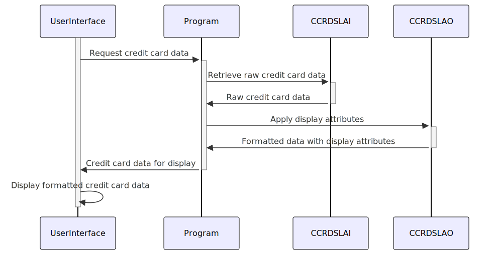

Gerado em: 1 de outubro de 2024
Título do Documento: COCRDSL.CPY - Estrutura de Dados de Cartão de Crédito
Descrição Resumida:
Este programa define duas estruturas de dados, CCRDSLAI e CCRDSLAO, usadas para manipular informações de cartão de crédito dentro de um programa COBOL. CCRDSLAI armazena dados brutos do cartão de crédito, enquanto CCRDSLAO sobrepõe atributos de exibição aos dados para apresentação na interface do usuário.
Histórias do Usuário: Como desenvolvedor de sistema, preciso de uma maneira padronizada de armazenar e exibir informações de cartão de crédito para garantir a consistência dos dados e uma interface amigável.
Épico Relacionado: 3 - Gerenciamento de Cartão de Crédito
Requisitos Técnicos:
Definição da Estrutura de Dados:
CCRDSLAI e CCRDSLAO.CCRDSLAI conterá campos de dados brutos para informações do cartão de crédito.CCRDSLAO redefinirá CCRDSLAI e incluirá atributos de exibição para cada campo.Especificações do Campo de Dados:
TRNNAME), títulos (TITLE01, TITLE02), data e hora (CURDATE, CURTIME), nome do programa (PGMNAME), identificadores de conta e cartão (ACCTSID, CARDSID), nome do titular do cartão (CRDNAME), código do tipo de cartão (CRDSTCD), data de expiração (EXPMON, EXPYEAR), mensagens (INFOMSG, ERRMSG) e teclas de função (FKEYS).PIC X(16) para um campo alfanumérico de 16 caracteres).Mapeamento de Atributos de Exibição:
CCRDSLAO, definir atributos de exibição para cada campo de dados, como cor (C), status protegido (P), destaque (H), visibilidade (V) e ordem (O).CCRDSLAI.Modelos Relacionados:
Transação de Cartão de Crédito:
TRNNAME (String): Nome da transação (por exemplo, “Compra”, “Pagamento”)CURDATE (Data): Data da transaçãoCURTIME (Hora): Hora da transaçãoConta de Cartão de Crédito:
ACCTSID (String): Identificador da contaCARDSID (String): Número do cartão de créditoCRDNAME (String): Nome do titular do cartãoCRDSTCD (String): Código do tipo de cartão de créditoEXPMON (Inteiro): Mês de expiraçãoEXPYEAR (Inteiro): Ano de expiraçãoInformação do Sistema:
PGMNAME (String): Nome do programa para rastreamentoInterface do Usuário:
TITLE01 (String): Título da tela ou rótuloTITLE02 (String): Título secundário ou rótuloINFOMSG (String): Mensagem informativa para o usuárioERRMSG (String): Mensagem de erro a ser exibidaFKEYS (String): Descrições das teclas de função (por exemplo, “F1 para Ajuda”)Configurações:
Melhorias de Código:
Melhorias de Segurança:
Diagrama Conceitual:
–Made by “Smart Engineering” (by Compass.UOL)–